class: center, middle # Travail collaboratif efficace avec Git --- ## Objectifs + Comprendre l'intérêt des gestionnaires de code + Effectuer des manipulations simples + Découvrir une stratégie de gestion des projets --- class: center, middle, inverse ## Introduction --- template: inverse .left-column[ ## Pourquoi un SCM ? ### - Pour soi ] .right-column[ - Il est utile de pouvoir retrouver les **différentes étapes** de son travail. - Il est utile d'avoir **plusieurs versions** de son travail en même temps ] --- .left-column[ ## Pourquoi un SCM ? ### - Pour soi ### - Pour son équipe ] .right-column[ - Toute production - code ou autre - fait partie du patrimoine de son équipe et doit être **conservée** de manière pérenne (c.a.d avec des **pratiques connues**). ] --- .left-column[ ## Pourquoi un SCM ? ### - Pour soi ### - Pour son équipe ### - Pour nos équipes ] .right-column[ - Il est **nécessaire** d'outiller et organiser le travail collaboratif ] --- ## Pourquoi Git ? - Il existe beaucoup de SCM : CVS, SVN, **Git**, Mercurial,... - En général chaque nouvelle génération d'outil rend la précédente obsolète Git apporte beaucoup de souplesse : - Le travail **déconnecté** - La possibilité de travailler facilement sur **plusieurs versions** de l'application (les *branches*) - La version de production - La version en développement - La possibilité de **travailler à plusieurs** : - avec un serveur central - avec plusieurs serveurs centraux - directement entre plusieurs développeurs Git est - **rapide** - **agnostique** : disponible sur tous les OS, - **social** : http://github.com - **efficace** : gitflow --- class: center, middle, inverse ## Remarques --- ## IDE Utilisé - Par défaut Git s'utilise avec l'invite de commande - Les principaux IDE (Eclipse, Netbeans, IntelliJ ...) masquent ces commandes en les intégrant à leur interface - Les exercices proposés utilisent gratuit l'IDE PyCharm (Community Edition) disponible ici : https://www.jetbrains.com/pycharm/. - Toutefois, afin de permettre le passage vers d'autres IDE et l'appronfondissement de l'outil, les commandes sont indiquées en marge des exercices <div class="100pct" > <div class="happy box"> .label[Mode commande] </div> .gitCommand[ ```terminal $ git status $ git add ... ``` ] </div> - L'onglet `Console` de PyCharm permet de voir les commandes effectuées de manière sous-jacente. --- ## Serveur Git - Plusieurs serveurs Git en ligne et gratuits existent ([GitHub](https://github.com/), [BitBucket](https://bitbucket.org/),...) - Il existe également des serveurs à installer localement ([GitLab C.E.](https://about.gitlab.com/)) - **Sourcesup** Renater propose gratuitement une forge destinée aux EPST, **[Sourcesup](http://sourcesup.renater.fr)** offrant les fonctionnalités suivantes : + Dépôts publics/privés (Authentification basée sur Sibboleth) + Git + Gestionnaire d'anomalies (Mantis BT) + Wiki + Moteur d'intégration continue (Jenkins) --- class: center, middle, inverse ## Quelques notions préliminaires --- ## Dépôt local et répertoire de travail Pour chaque projet, Git utilise un répertoire (.git) dans lequel il va mettre l'ensemble des données/métadonnées permettant de retracer l'histoire du projet. C'est le **dépôt local** du projet. Git va extraire de ce dépot une version du projet dans un répertoire afin de permettre l'édition des fichiers. C'est le **répertoire de travail** du projet. (En général le dépot local est un sous répertoire du projet) --- ## Instantané Chaque fois qu'un projet est *validé*, Git stocke dans le dépôt local, une image de tous les fichers composants alors le projet. On parle d'**instantané**. .center[] --- ## Échanges locaux Avec Git, le cycle classique est le suivant : 1. On ajoute/supprime/modifie des fichiers dans l'espace de travail 2. On groupe l'ensemble de ces modifications (on parle d'*indexation*) 3. On valide (*commit*) ces modifications dans le dépôt local en y associant un commentaire (exemple: correction de l'anomalie #145) .center[] --- class: center, middle, inverse ## Manipulations locales --- ## Ajouter Git à un projet Le projet peut déjà exister ou n'être qu'un répertoire vide. + Dans le menu `VCS`, sélectionnez `Enable Version Control Integration` .center[] + Dans la fenêtre popup, sélectionnez `Git` et cliquez sur `Ok` .center[<img src="./images/init2.png" width="50%"/>] + A l'issue de la configuration, la barre de statut devrait afficher `Git:master` .center[<img src="./images/init3.png" width="30%"/>] --- ## Ajouter Git à un projet <div class="100pct" > <div class="happy box"> .label[Mode commande] </div> .gitCommand[ ```terminal $ git init ``` ] </div> --- ## Connaitre les fichiers non validés Il est utile de pouvoir facilement voir l'ensemble des fichiers ajoutés/supprimés/modifiés et non ajoutés au dépôt local. + Dans la barre de statut, faites apparaître le menu `Version Control` et cliquez dessus .center[<img src="./images/status1.png" width="20%"/>] + Cliquez sur `Local Changes` pour faire apparaître la liste des fichiers non validés .center[<img src="./images/status2.png" width="50%"/>] --- ## Connaitre les fichiers non validés <div class="100pct" > <div class="happy box"> .label[Mode commande] </div> .gitCommand[ ```terminal $ git status # On branch master # Changes not staged for commit: # (use "git add <file>..." to update what will be committed) # (use "git checkout -- <file>..." to discard changes in working directory) # # modified: fichier1.txt # modified: fichier2.txt # # Untracked files: # (use "git add <file>..." to include in what will be committed) # # .idea/ no changes added to commit (use "git add" and/or "git commit -a") ``` ] </div> - **Rappel :** L'onglet `Console` de PyCharm permet de voir les commandes effectuées de manière sous-jacente. .center[<img src="./images/status3.png" width="50%"/>] --- ## Ajouter des fichiers au dépot local (commit) + Dans le projet, créez deux fichiers, *fichier1.txt* et *fichier2.txt* avec comme contenu *Contenu du fichier X* PyCharm vous propose par défaut que ces fichiers soient gérés par Git. Déclinez l'offre en cliquant sur `No` .center[] + Vous pouvez vérifier dans `Local Changes` que les deux fichiers apparaissent dans la section *Unversioned Files* + Sélectionnez les fichiers (dans l'arboresence du projet), Dans le menu contextuel cliquez sur `Git` puis sur `Add`. .center[<img src="./images/add1.png" width="35%"/>] --- ## Ajouter des fichiers au dépot local Les fichiers sont désormais *indexés* et vont pouvoir être proposés au prochain *Commit* + Cliquez sur l'icône de commit .center[<img src="./images/add3.png" width="35%"/>] + La fenêtre qui apparaît indique les fichiers qui vont faire partie du commit. Vous pouvez en désélectionner. .center[<img src="./images/add4.png" width="25%"/>] + Indiquez un commentaire ainsi que le nom de l'auteur et cliquez sur `Commit` --- ## Ajouter des fichiers au dépot local <div class="100pct" > <div class="happy box"> .label[Mode commande] </div> .gitCommand[ ```terminal $ git add monfichier $ git commit $ git commit -m "mon commentaire" (permet d indiquer directement un commentaire) $ git commit -a -m "mon commentaire" (permet de passer la phase d indexation et prends en compte tous les fichiers) ``` ] </div> --- ## Ignorer des fichiers Certains fichiers ne doivent pas être commités : + Fichier spécifiques à un IDE ou à un poste de développement + Fichiers générés (.java, .jar) + ... PyCharm propose un mécanisme propriétaire pour ignorer les fichiers. Nous allons utiliser le **mécanisme standard de Git** qui repose sur un fichier nommé *.gitignore* + Créez un fichier *.gitignore* à la racine du projet + Indiquez comme contenu */.idea*.Cela signifie que tous les fichiers du répertoire *.idea* seront ignorés. + La liste *Unversioned Files* n'affiche plus les fichiers du répertoire *.idea* .center[<img src="./images/ignore1.png" width="25%"/>] --- ## Ignorer des fichiers ### Remarques + Le fichier .gitignore est un fichier ordinaire : il doit être ajouté au dépôt et commité. + La syntaxe du fichier .gitignore est détaillée ici : http://git-scm.com/docs/gitignore + Des exemples de fichiers *.gitignore* adaptés à chaque language/framework sont disponibles : https://github.com/github/gitignore --- ## Supprimer un fichier Lorsque que l'on supprime un fichier - via l'IDE par exemple - il faut répercuter cette suppression au niveau du dépôt local si celui-ci y était déjà présent. Cette opération est similaire à un commit. + Créez un fichier *fichier3.txt* avec comme contenu *Contenu du fichier 3*. Ajoutez ce fichier au dépot local + Supprimez le fichier dans l'arboresence du projet. + Cliquez sur le bouton *Commit* .center[] --- ## Supprimer un fichier + Remarquez que cette fois-ci, la boite de dialogue indique que le commit va concerner une suppression .center[] + Commitez <div class="100pct" > <div class="happy box"> .label[Mode commande] </div> .gitCommand[ ```terminal $ git rm monfichier $ git rm --cached monfichier (dans ce cas le fichier est supprimé du dépôt mais pas de l espace de travail) ``` ] </div> --- ## Renommer un fichier Répercuter le changement de nom d'un fichier présent au dépôt est un action similaire à la suppression + Renommez le fichier *fichier2.txt* en *fichier2b.txt* (via le menu contextuel) .center[] + L'onglet `Local Changes` indique que le changement est un changement de nom .center[] + Cliquez sur le bouton *Commit* .center[<img src="./images/renamming3.png" width="7%"/>] --- ## Renommer un fichier + Remarquez que cette fois-ci, la boite de dialogue indique que le commit va concerner un changement de nom .center[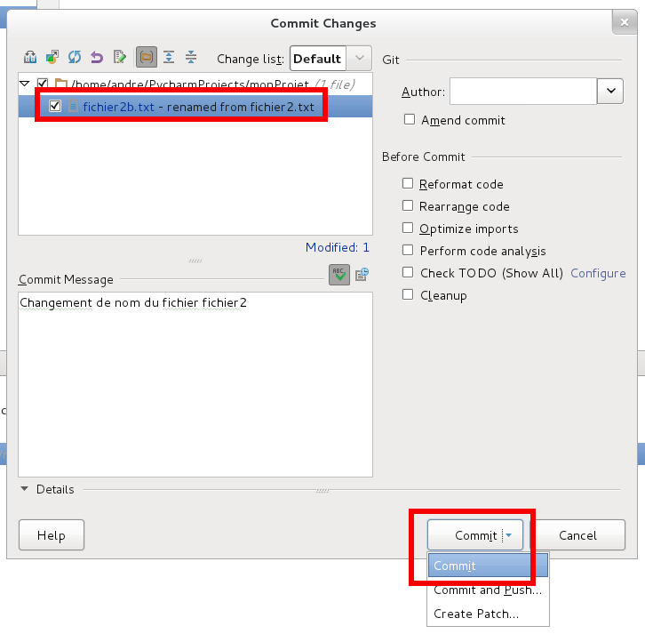] + Commitez <div class="100pct" > <div class="happy box"> .label[Mode commande] </div> .gitCommand[ ```terminal De manière sous-jacente, le renommage correspond à la succession des commandes : $ git rm monfichier $ git add monnouveaufichier $ git commit ``` ] </div> --- ## Consulter l'historique L'onglet `Log` permet de consulter l'historique du projet : + les différents *commits* (avec leur messages) + les différentes branches .center[] <div class="100pct" > <div class="happy box"> .label[Mode commande] </div> .gitCommand[ ```terminal $ git log $ git log --pretty=oneline $ git log --pretty=short $ git log --since="2 weeks ago" ``` ] </div> --- ## Consulter l'historique Pour chaque *commit*, les différents fichiers concernés sont affichés sur le panneau de droite. Dans le menu contextuel, `Show Diff with local` permet de voir les différences par rapport au répertoire de travail .center[] .center[] --- ## Consulter l'historique Il est également possible de connaitre l'historique d'un fichier unique .center[] .center[] --- ## Consulter l'historique <div class="100pct" > <div class="happy box"> .label[Mode commande] </div> .gitCommand[ ```terminal $ git log -p --chemin/vers/le/fichier ``` ] </div> --- ## Ajouter des étiquettes (tag) Une étiquette permet de donner un nom sur un instantanné afin d'être facilement identifiable par la suite. Par exemple, cela permet d'associer un numéro de version à un état du projet. + Dans la vue `Log`, sélectionnez le *commit* à *tagger* et faîtes apparaître le menu contextuel + Sélectionnez la commande `New Tag...` .center[] --- ## Ajouter des étiquettes (tag) + Indiquez le nom de l'étiquette et validez .center[] + L'étiquette est visible dans la vue `Log` .center[] <div class="100pct" > <div class="happy box"> .label[Mode commande] </div> .gitCommand[ ```terminal $ git tag -a v1.0 (ajout de l etiquette) $ git tag -a v1.0 -m 'mon commentaire' $ git tag -d v1.0 (suppression de l etiquette) ``` ] </div> --- ## Remplacer un fichier par une version plus ancienne La commande `git checkout` permet de naviguer entre les branches et les commits (cf. infra). Elle peut toutefois être utilisée pour restaurer un fichier dans une version plus ancienne. Par exemple *fichier3.txt*. + Identifiez l'identifiant du commit contenant la version de *fichier3.txt* souhaitée via la vue `Log`. Dans notre cas **479b5c7**. .center[] + Ouvrir un terminal dans le répertoire racine du projet --- ## Remplacer un fichier par une version plus ancienne + Lancez la commande *git checkout **479b5c7** fichier3.txt* + Le fichier a été restauré et est présent dans l'espace de travail comme un nouveau fichier. .center[] --- ## Repartir d'un commit plus ancien Il peut être utile - mais **dangereux** - de repartir d'un *commit* plus ancien et de supprimer les *commits* survenus depuis. + Dans la fenêtre `Log`, sélectionnez le *commit* à partir duquel vous voulez repartir. + Dans le menu contextuel, sélectionnez la commande `Reset current branche to here...` .center[] --- ## Repartir d'un commit plus ancien + Dans la boite de dialogue choisissez l'option adaptée à votre besoin et validez en cliquant sur `Reset`. .center[] <div class="100pct" > <div class="happy box"> .label[Mode commande] </div> .gitCommand[ ```terminal $ git reset ... ``` ] </div> Il est peut-être plus **prudent** de créer une branche à partir du *commit* identifié. --- class: center, middle, inverse ## Les branches - Partie 1 : La théorie --- ## Pourquoi avoir besoin de branches ? Il peut être nécessaire de travailler simultanément sur plusieurs versions du code: + version en production + version en développement + ... Le concept de **branche** répond à ce besoin et les différents SCM le mettent en oeuvre. Toutefois, généralement, l'implémentation proposée fait que le concept est rarement utilisé. *Exemple*: En SVN, les branches sont gérées sur le serveur et le temps de création des branches puis de bascule d'une branche à l'autre est rédhibitoire ** Avec Git, les branches sont très simples à gérer et le passage entre deux branches est quasi instantanné.** --- ## GitFlow - En 2010, Vincent Driessen publie un article intitulé *A successful Git branching model* (http://nvie.com/posts/a-successful-git-branching-model/) proposant une méthodologie efficace pour gérer les projets avec Git grâce aux branches. - Cette méthodologie a été rapidement adoptée par beaucoup de grands acteurs du développement, notamment dans le cadre de méthodologie agile. --- ## GitFlow .center[<img src="./images/gitflow1.png" width="53%"/>] --- ## GitFlow ### Principaux points - Branches pérennes - *master* : branche correspondant au code en production - *develop* : branche correspondant au code en développement - Branches transitoires - Feature : pour toute nouvelle fonctionalité ou correction de bug - Hotfix: correction de bug en production - Release : livraison --- ## GitFlow ### Remarque - Une surcouche à Git en mode commande est également disponible mettant en oeuvre de manière explicite les principes de GitFlow. Toutefois, elle n'est pas indispensable. .center[] .small[.center[http://danielkummer.github.io/git-flow-cheatsheet/index.fr_FR.html]] --- ## Comment Git gère les branches ? + Chaque *commit* entraîne la création d'un instantané identifié par un numéro unique. .center[] + Avec Git, une branche est simplement un pointeur vers un instantanné + Un pointeur spécial, *HEAD*, indique la branche courante. .center[] --- ## Comment Git gère les branches ? + Créer une nouvelle branche revient donc à ajouter un nouveau pointeur sur l'instantanné courant. .center[<img src="./images/branching_manip3.png" width="33%"/>] + Changer de branche consiste à basculer vers l'instantanné pointé par la branche et à mettre à jour le pointeur *HEAD*. .center[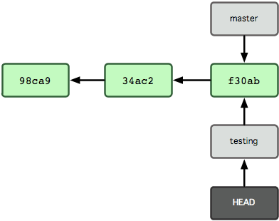] --- ## Comment Git gère les branches ? + Lors des *commits* suivants seul le pointeur de la branche actuelle va se déplacer. .center[<img src="./images/branching_manip5.png" width="53%"/>] --- ## Les fusions + Deux cas se présentent en général 1. La branche qui va recevoir la fusion est un ancêtre de la branche à fusionner 2. La branche qui va recevoir la fusion n'est pas un ancêtre de la branche à fusionner --- ## Les fusions ### Cas 1 : La branche qui va recevoir la fusion est un ancêtre de la branche à fusionner Ce cas est très simple, la fusion revient simplement à déplacer le curseur de la branche recevante sur l'instantanné pointé par la branche à fusionner. .center[ ] .small[.center[**Avant fusion**]] .center[] .small[.center[**Après fusion**]] --- ## Les fusions ### Cas 2 : La branche qui va recevoir la fusion n'est pas un ancêtre de la branche à fusionner Ce cas est potentiellement compliqué car certains fichiers ont pu être modifiés dans les deux branches, il va falloir fusionner ces fichiers via un nouvel instantanné. .center[ ] .small[.center[**Avant fusion**]] .center[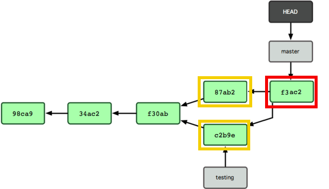] .small[.center[**Après fusion**]] --- class: center, middle, inverse ## Les branches - Partie 2 : La pratique --- ## Créer une branche La branche courante est indiquée à droite de la barre de statut. .center[] Par défaut, la 1ère branche s'appelle *master*. Pour créer une nouvelle branche et basculer dessus : + Cliquez sur la branche actuelle afin de faire apparaitre le menu déroulant et sélectionnez l'action `New Branch` .center[] --- ## Créer une branche + Dans la boite de dialogue, indiquez le nom de la nouvelle branche : *develop* .center[] + La vue `Log` affiche les deux branches au niveau du dernier *commit* .center[] --- ## Créer une branche La barre de statut indique désormais *develop* comme branche actuelle. .center[] Créez de la même manière une branche nommée *feature_MaFonction* et basculez dessus. <div class="100pct" > <div class="happy box"> .label[Mode commande] </div> .gitCommand[ ```terminal $ git branch mabranche (creation d une branche) $ git checkout mabranche (bascule sur une branche) $ git checkout -b mabranche (si la branche n existe pas elle est créée, sinon il s agit d une simple bascule) $ git branch -m monnouveaunom (renomme la branche courante) ``` ] </div> --- ## Basculer d'une branche à l'autre + Le menu déroulant des branches indique les différentes branches présentes + Pour basculer d'une branche à l'autre, il suffit de chosir la branche cible dans le menu et de cliquer sur `Checkout` .center[] La bascule est très rapide car totalement locale. --- ## Basculer d'une branche à l'autre Remarque : le fichier *fichier3.txt* est présent dans la nouvelle branche. --- ## Fusion simple (Fast Forward) + Dans fichier1.txt ajoutez une nouvelle ligne (*Ligne ajoutée dans MaFonction*) + Ajoutez un fichier *fichier4.txt* avec comme contenu la ligne *Contenu du fichier4.txt* + Commitez le fichier 1 et le fichier 4 avec un commentaire identifié (*modification pour MaFonction*) .center[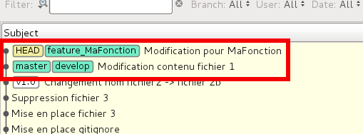] + Basculez sur la branche *develop* (le fichier *fichier1.txt* est affiché dans son état antérieur, le fichier *fichier4.txt* absent) + Dans le menu des branches, sélectionnez la branche *feature_MaFonction* et cliquez sur *merge* .center[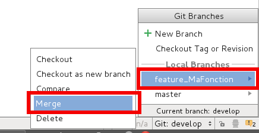] --- ## Fusion simple (Fast Forward) + Le fichier 1 modifié et le fichier 4 sont bien présents + En fait Git n'a fait que déplacer le pointeur de la branche *develop* sur la branche *feature_MaFonction* .center[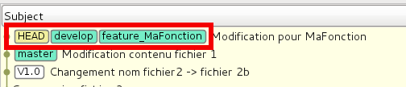] <div class="100pct" > <div class="happy box"> .label[Mode commande] </div> .gitCommand[ ```terminal $ git merge maBrancheAFusionner $ git merge --no-ff maBrancheAFusionner (fusion avec un commit de merge) ``` ] </div> --- ## Fusion avec conflit + Basculez sur la branche *master* + Créez une branche *Hotfix_1* et basculez sur elle .center[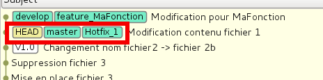] + Dans le fichier *fichier1.txt* ajouter une ligne *Correction hotfix 1* + Commitez ce fichier + Revenez sur *master* + Mergez la branche *Hotfix_1* + Basculez sur *develop* .center[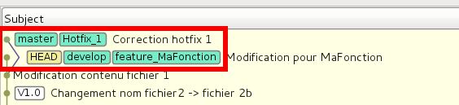] --- ## Fusion avec conflit + Supprimez le fichier *fichier3.txt* + Demandez la fusion avec la branche *Hotfix_1* + Il y a dans ce cas, un conflit avec les deux versions de *fichier1.txt* .center[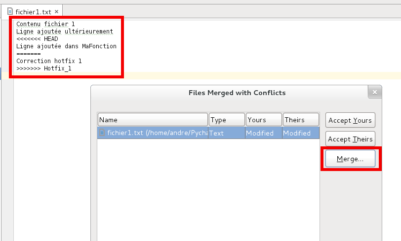] + Cliquez sur `Merge`. Dans la boite de dialogue, fusionnez manuellement les deux fichiers .center[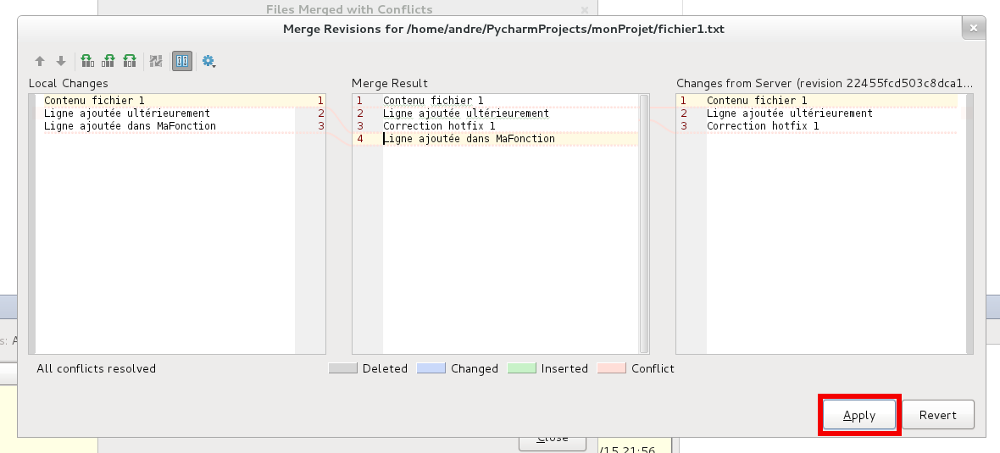] + Validez en cliquant sur `Apply`. --- ## Fusion avec conflit + La situation est alors la suivante : .center[<img src="./images/practicalBranching14.png" width="43%"/>] Notez la présence du *commit* de fusion. --- ## Suppression de branche Les branches *Hotfix_1* et *feature_MaFonction* sont des branches temporaires. Elles peuvent être supprimées. + Dans le menu des branches, sélectionnez chacune de ces deux branches et cliquez sur `Delete` .center[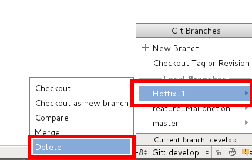] Remarque: Git vous avertit si vous tentez de supprimer une branche n'ayant jamais été fusionnée <div class="100pct" > <div class="happy box"> .label[Mode commande] </div> .gitCommand[ ```terminal $ git branch -d maBrancheASupprimer $ git branch -D maBrancheASupprimer (pour supprimer une branche non fusionnée) ``` ] </div> --- class: center, middle, inverse ## Échanger avec d'autres développeurs : les dépôts distants --- ## Les dépôts distants : remote Objectifs + Les dépots vont permettre aux développeurs de partager leur travail. + Ils peuvent aussi servir de dépôt de référence pour l'intégration continue Git offre beaucoup de souplesse dans la gestion des dépôts distants : + Nature (cloud, disque partagé, clé usb...) + Protocole (SSH, Git, HTTPS...) + Nombre (utilisation de plusieurs dépôts...) + Structure (communication directe entre développeur, serveur central ...) Dans notre exercice nous allons créer un dépôt distant ...local au poste de travail. --- ## Création du dépôt distant + Dans un terminal créez un répertoire *monDepotGit.git* + Entrez dans le répertoire + tapez la commande *git init --bare* .center[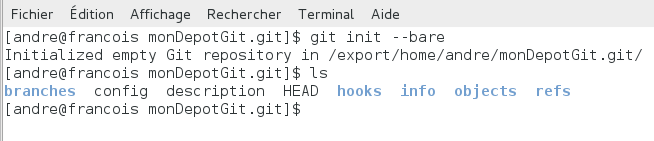] Remarque: par convention, le nom des dépôts Git finit par *.git* --- ## Connexion au dépôt distant (et premier envoi) + Dans Pycharm, via le menu contextuel du projet, utilisez la commande `Git > Repository > Push` *Push* est la commande qui indique à Git de transférer des fichiers vers le dépôt distant. .center[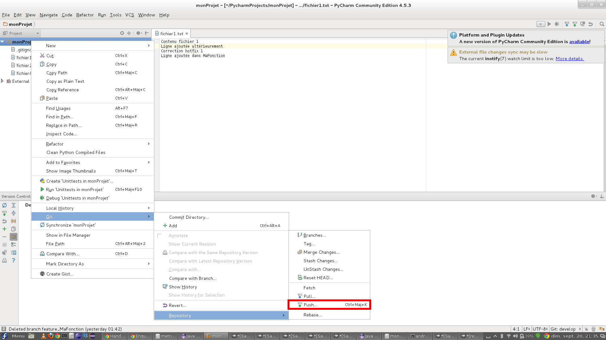] --- ## Connexion au dépôt distant (et premier envoi) + Dans la fenêtre qui s'ouvre cliquez sur `Define remote` .center[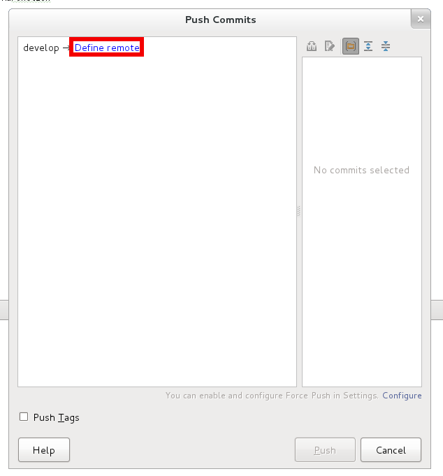] + Laissez le nom *origin* + Indiquez comme URL l'adresse de votre dépôt distant et validez en cliquant sur `Ok` .center[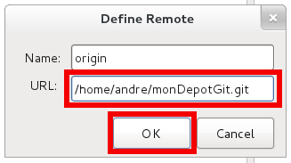] --- ## Connexion au dépôt distant (et premier envoi) ### Remarques + *origin* est le nom d'usage pour le serveur distant central. + L'URL indique le protocole de connexion : + **HTTPS** : https://github.com/francoisandre/gtdrosea_workshop.git + **SSH** : git@github.com:francoisandre/gtdrosea_workshop.git + Finalisez le transfert en + Cliquant sur `Push tags` + Cliquant sur `Push` .center[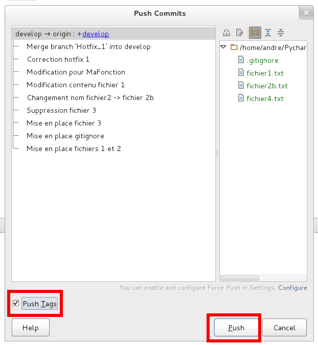] --- ## Connexion au dépôt distant (et premier envoi) <div class="100pct" > <div class="happy box"> .label[Mode commande] </div> .gitCommand[ ```terminal $ git remote add aliasduremote cheminduremote (pour ajouter un remote) $ git push aliasduremote nomdemabranche (pour transférer une branche sur un remote) ``` ] </div> --- ## Récupération du dépôt distant Nous allons récupérer le projet à partir du dépôt distant pour simuler un deuxième développeur Dans le menu `VCS`, Sélectionnez `Checkout from Version Control`puis `Git` .center[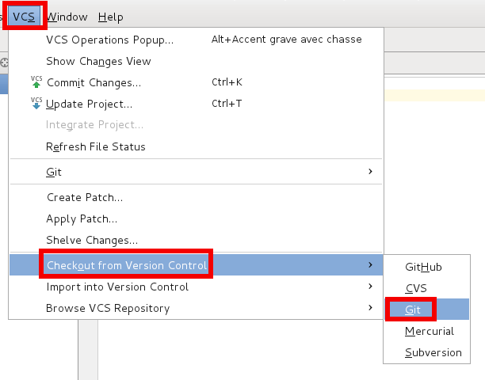] Le terme *Checkout* est ici inadapté, il s'agit d'un *Clone* qui va - par défaut - récupérer l'intégralité de l'historique du projet --- ## Récupération du dépôt distant + Indiquez l'adresse du dépôt distant + Indiquez comme nom de projet *monProjetDev2* + Validez en cliquant sur `Clone` .center[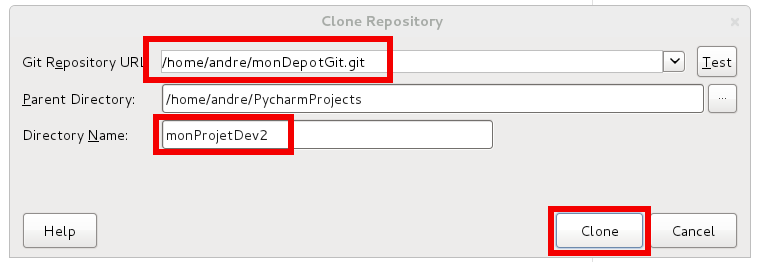] + Validez les boîtes de dialogues qui apparaissent alors et indiquez que vous souhaitez voir le projet dans une nouvelle fenêtre Dans la barre de statut vous remarquez que Git est activé et pointe alors sur la branche *master* qui n'existe pas dans notre dépôt distant. .center[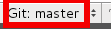] --- ## Récupération du dépôt distant + Dans la barre de statut, choisissez la branche *develop* et cliquez sur `Checkout as new local branch...` .center[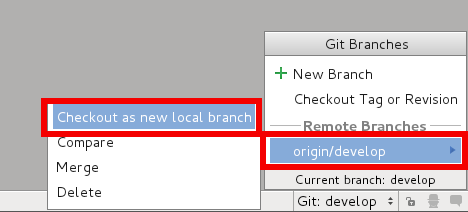] + A l'issue du traitement, on retrouve le projet complet dans l'environnement du deuxième développeur .center[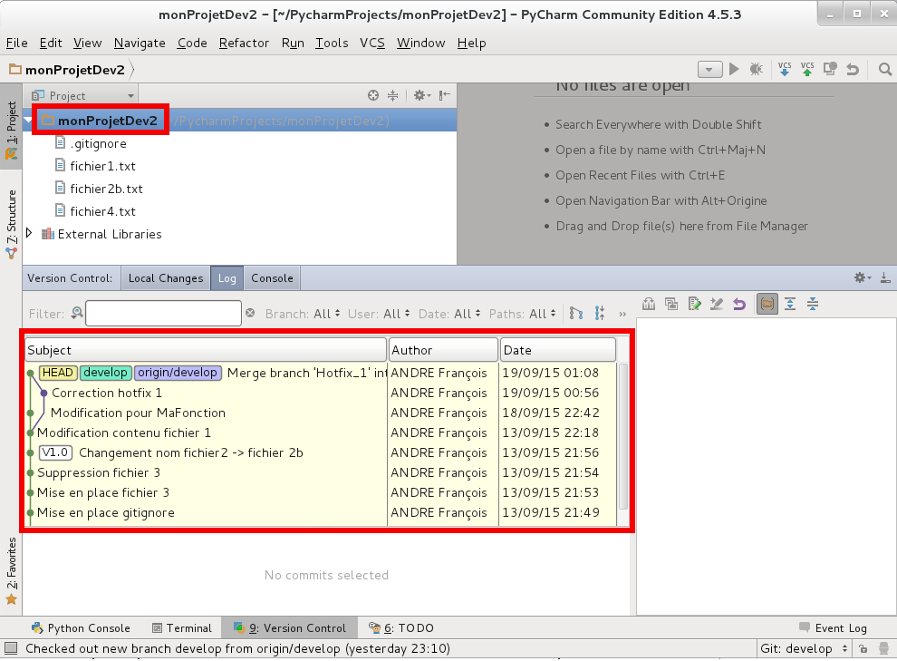] --- ## Transfert d'un commit (push) + Dans *monProjetDev2*, créez un fichier *fichier5.txt* avec comme contenu *Contenu du fichier fichier5.txt* + Faites un *commit* de ce fichier, mais dans la fenêtre de *commit* + Indiquez comme auteur *Developpeur 2* + Choisissez l'option `Commit and push...` .center[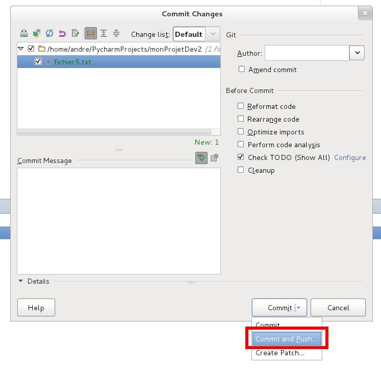] + Cliquez sur `Push` dans la fenêtre suivante Le contenu du *commit* a été transféré sur le dépôt distant --- ## Récupération d'un commit (pull) + Dans *monProjet*, à partir du menu contextuel du projet choisissez ` Git > Repository > Pull ` .center[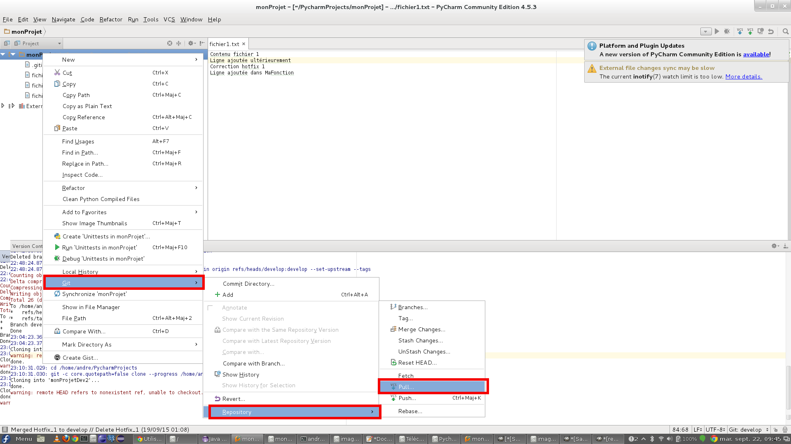] + Validez la fenêtre suivante en cliquant sur `Pull` --- ## Récupération d'un commit (pull) + Le *commit* contenant *fichier5.txt* a été récupéré dans *monProjet* .center[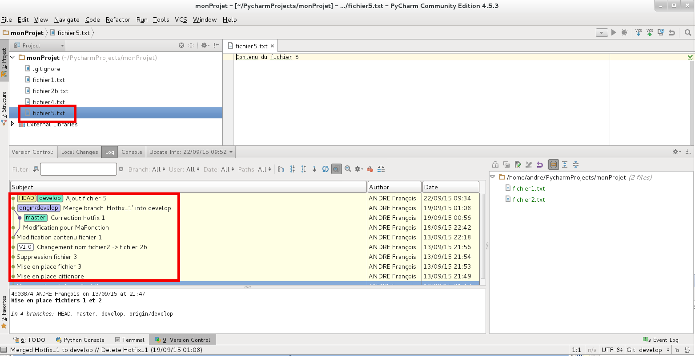] <div class="100pct" > <div class="happy box"> .label[Mode commande] </div> .gitCommand[ ```terminal $ git pull aliasduremote (récupération de toutes les branches) $ git pull aliasduremote nomdelabranche (récupération d une branche) $ git fetch aliasduremote nomdelabranche (récuếration d une branche en vue d une fusion manuelle) ``` ] </div> --- ## Remarques sur les *remotes* + Avec les *remotes*, les développeurs vont être confrontés aux problèmes classiques de fusions, vus précédemment + Des nouveaux problèmes vont apparaître : suppression de branches distantes, ... --- class: center, middle, inverse ## Conclusion --- ## Pour aller plus loin : ** Pro Git** (par Scott Chacon) - Ouvrage de référence - Disponible gratuitement en français : https://git-scm.com/book/fr/v2 (différents formats: pdf, html, epub...) ** Tutoriel(s) ** - http://www.grafikart.fr/formations/git --- class: center, middle, inverse ## Merci.